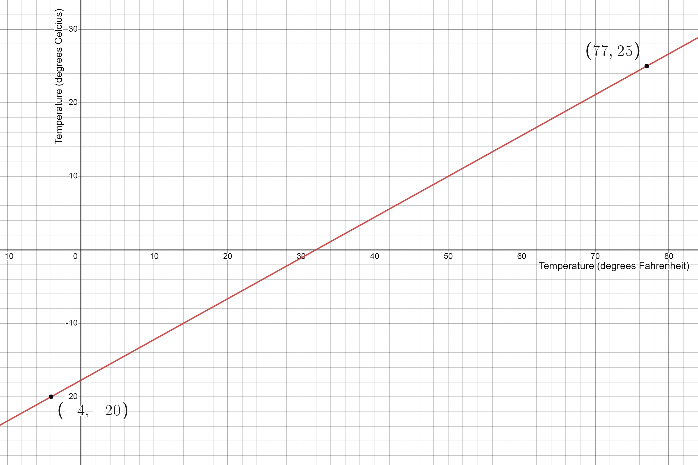
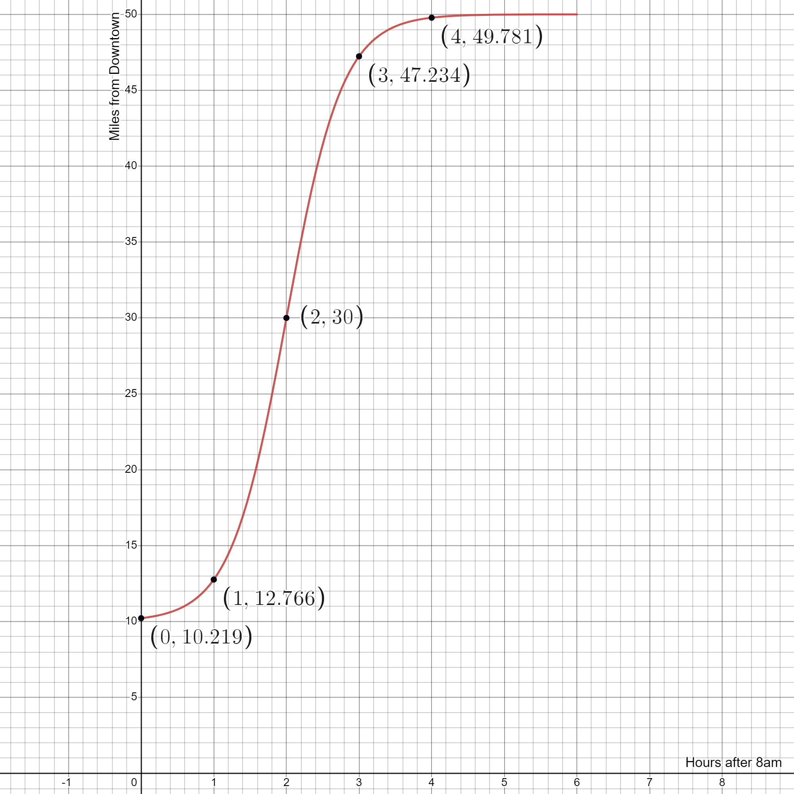
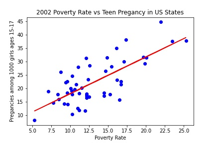

After completing this activity you will be able to:
Interpret the meaning of function notation.
Use function notation to describe an event.
Evaluate a function and solve an equation using function notation.
Perform calculations using function notation including Average Rate of Change.
Translate problems from a variety of contexts into mathematical representation and vice versa (linear, exponential, simple quadratics).
Identify when a linear model is reasonable for a given situation and, when appropriate, formulate a linear model. In the context of the situation interpret the slope and intercepts and determine the reasonable domain and range.
Use functional models to make predictions and solve problems.
In this activity we define a function and develop an understanding of function notation by comparing statements we already understand in English to equivalent statements written in “math” language.
The prerequisites for this lesson are knowing how to read a graph or a table of values and how to use a formula to make a calculation.
Subsection5.1.1What is a Function?
The mathematical concept of a function can be extremely complicated. It took thousands of years to come up with it, define it and formalize it. For example, just look at this definition from Wikipedia 1
en.wikipedia.org/wiki/Function_(mathematics)
(do not spend too much time on it.)
You could spend your whole life learning about what a function is and never get to the rest of this book! For this reason we will keep things simple and informal in order to attain a quick and accessible understanding of topics, including functions. Students continuing in mathematics will add to their knowledge of functions as needed and as part of a life-long process.
Start by remembering this: one input, one output.
A function is a rule that takes a piece of “usable” information that you choose (input) and gives you some kind of result (output). By “usable” we mean information that has meaning for the function.
Think of a function as a sort of machine. Using some input, the machine does something to the input and then out pops a result. In this course our inputs will be mostly numbers and the process will yield numbers as results.
Activity5.1.1.Temperature Converter.
A simple example of a function is a temperature converter. It converts a temperature from degrees Fahrenheit to degrees Celsius.
The function is the rule or process used to convert from one unit of temperature to the other.
Our function is a graph, but it could have been a table of values or a formula.
The graph illustrates that the temperature in degrees Celsius is a function of the temperature in degrees Fahrenheit.
The temperature in degrees Fahrenheit, \(F\text{,}\) is the input while the temperature in degrees Celsius, \(C\text{,}\) is the output.

Use the graph to estimate your answers below:
The temperature of \(77\) degrees Fahrenheit to degrees Celsius
What temperature in Fahrenheit is the same as \(-20\) degrees Celsius?
The temperature of \(32\) degrees Fahrenheit to degrees Celsius
What temperature in Fahrenheit is the same as \(10\) degrees Celsius?
Solution.
The first two are shown as ordered pairs. If you recognize that 77 is an input value and -20 is an output value, then you can see that \(77 \text{degrees Fahrenheit} = 25 \text{degrees Celsius}\) and \(-4 \text{degrees Fahrenheit} = -20 \text{degrees Celsius}\text{.}\)
For the last two, you must pay attention to the horizontal and vertical axes. Recognize that the tick-marks go by 2’s, so \(32 \text{degrees Fahrenheit} = 0 \text{degrees Celsius}\) and \(50 \text{degrees Fahrenheit} = 10 \text{degrees Celsius}\text{.}\)
This brings up some good questions:
How do we communicate that we have a function? There has to be a simple or quick way to communicate we have a function.
What kinds of inputs can the function use? The temperature function in the previous exercise could only accept temperatures between \(-60\) and \(110\) degrees Fahrenheit. The input of \(150\) degrees \(F\) is not usable because it is not available to choose.
What are the possible output temperatures in degrees Celsius? Is any temperature possible or is there a window of reasonable temperature expectations?
How are the two temperature units related? If you increase degrees F, does the temperature in degrees \(C\) also increase?
We start with notation. We don’t want to keep writing the word, F U N C T I O N, all the time. That’s just way too many letters.
Subsection5.1.2Math as a Language
Math is just another language. We use it to communicate measurements, changes in value and how things are related to or affect one another. Almost everything you say or describe in Math, you can say or describe in English.
In this next exercise we learn to communicate the position of a train as time passes and develop the notation to express where the train is at different times. We will assume that this train runs on time, every day and the conditions every day are the same. You know, an alternate universe called “example land”.
Activity5.1.2.
Consider the graph below. The dot on the graph represents the position of a train at a particular time. The cross-hairs represent the time. Notice that the train’s distance, in miles, from downtown depends on the time, in hours, after 8 a.m.

How far from downtown is the train at 10 a.m.?
Solution.
Since 10 a.m. is 8 a.m. + 2 hours, and we have the point (2,30) labelled on the graph, we see that the train is 30 miles from downtown at 10am.
In English you can communicate information about time and position in a simple sentence like
\(2\) hours after \(8\) a.m. the train is \(30\) miles from downtown.
Here is what that same sentence looks like in Spanish.
\(2\) horas despues de las 8 de la mañana el tren esta 30 millas lejos del centro.
Here is what that same sentence could look like in “math”.
\(f(2) = 30\)
Subsection5.1.3The Grammar of Function Notation
The math “sentence” above is actually an equation and it uses function notation to express the information about the train’s position at a particular time.
In math we don’t really have subjects or verbs or objects. Instead we have input values (numbers) and we have output values. The function is the “machine” or the rule that tells us how to use the input to make an output.
Variables are used to represent values we don’t know or that may change. For a function, the input is called the independent variable, and the output is called the dependent variable. This is because the output depends on the input.
The distance from downtown is constantly changing with time, so we can let the dependent variable \(D\) represent the “Train’s distance in miles from downtown”. Similarly, we can use the independent variable \(t\) to represent the “number of hours after \(8\) a.m.”.
Typically, we use variables that have something to do with the context of the problem, but sometimes we generalize an expression or equation with \(x\)’s and \(y\)’s when we have nothing specific in mind.
Variables have units.
If the variables represent actual things or events, we must define them to include the units we used to measure the event. This allows us to extract meaning from the values or expressions.
If you know Spanish you can interpret the meaning of a Spanish article you read by translating it into English. Likewise, if you know “math”, you can interpret the meaning of function notation by translating it into English, provided you know what the variables in the notation mean or what they are measuring.
If \(D\) represents distance, you must define the units in which the distance is measured: miles, inches, centimeters, light years, etc.
If \(t\) represents time, will it be measured with units of seconds, hours or years?
Since the position of the train depends on the amount of time that has passed, we say “the distance depends on time”. More specifically, we say that the distance of the train from downtown is a function of time.
Function notation allows us to communicate that distance is a function of time by simply writing \(D = f(t)\text{.}\) The notation \(f(t)\) is read as, “\(f\) of \(t\)”.
Remember \(t\) is a value. The function uses \(t\) to create the value \(D\text{.}\)
Also, don’t confuse the notation with multiplication! The expression \(f(t)\) does not mean \(f\) times \(t\text{.}\)
Note5.1.1.
The word “function” usually refers to the actual rule which turns the input into the output. Sometimes, however, we will use it to describe the output of the relationship.
Activity5.1.3.
How would you say the function notation in each statement below?
Tarzan(the jungle)
Tarzan times the jungle
Tarzan jungle
Tarzan of the jungle
Jungle after Tarzan
Helen(Troy)
Helen loves Troy
Helen multiplied by Troy
Helen next to Troy
Helen of Troy
\(f(x)\)
f of x
f times x
f parentheses x
f x
Function notation like \(f(t)\) or \(f(x)\) or \(f(\text{anything})\) implies there is some kind of relation, some kind of rule, that takes a piece of information and returns a response or result. The format of function notation works on the basic principle of input and output and we often use the notation when we refer to things we don’t yet know.
For instance, if you work as a health assistant, you probably earn some hourly salary and you probably work some number of hours each week. I have no idea how many hours a week you work and no idea how much you earn. But I do know your weekly salary is related to the number of hours you work. In fact, your weekly salary is a function of the number of hours you work.
If \(t\) is the number of hours you work and \(S\) is your weekly salary, I can use function notation to say \(S = f(t)\text{,}\) where \(f\) is the function, the instructions, that calculates your weekly salary. If you work \(12\) hours, then \(t = 12\text{,}\) so \(f(12)\) is your weekly salary for working \(12\) hours.
Notice I still don’t know what the salary actually is, but I can use function notation to talk about it. The expression \(f(12)\) literally means, “whatever you earn when you work \(12\) hours.”
In our train example we chose some input, a time, and the function gave us an output of distance. The notation tells the reader what the input is by showing it in the parentheses:
The function notation \(f(0)\) is telling us the input is \(0\text{.}\) That means, “\(0\) hours after \(8\) a.m.” In other words, it’s \(8\) a.m.
On the other hand, \(f(0)\) represents an output. It is “the train’s distance from downtown, \(0\) hours after \(8\) a.m.” But we don’t know what that distance actually is yet. In this case, the notation \(f(0)\) means “Whatever the distance is at t = 0”.
Nonetheless, the input and output create an ordered pair \((0, f(0))\text{.}\) On a graph the ordered pair is a point.
Activity5.1.4.
The graph below is a function that illustrates a train’s distance from downtown, in miles, as a function of time in hours after \(8\) a.m. When using a graph the best you can do is estimate. Since \(f(0)\) represents a distance at \(8\) a.m., we can use the graph to find what the distance is.
What is \(f(0) \) approximately equal to?
What time is \(f(0)\) referring to?
The notation \(f(0)\) is read as “\(f\) of zero.” What do you think \(f(0)\) means in the context of this train story?
How would you represent the statement “train’s distance at 10 a.m.” using function notation?
Here is another example to further explore the use function notation.
Activity5.1.5.
Let \(V = f(A)\) be a function in which the input is the area of a house (measured in square feet), and the output is the value of the house in dollars. Consider the equation \(f(900)=209700\) The notation gives us information about the house. Given \(f(900)=209700\text{,}\)
What is the area of the house?
What is the value of the house?
Interpret the meaning of \(f(900)=209700\) in English.
Solution.
900 square feet
$209,700
A 900 square foot house has a value of $209,700.
Subsection5.1.4Average Rate of Change, Inuitive Knowledge
In this activity we introduce the Greek letter \(\Delta\) that represents change, and we develop the concept of average rate of change.
The prerequisites for this lesson are knowing how to calculate the slope of a line and understanding the meaning of slope.
Let’s start by realizing you already understand the concept of average rate of change, but maybe you have never heard the phrase before.
It turns out, average rate of change is just another way to talk about slope. As the name implies, it measures how quickly things change, on average.
Common examples of average rate of change:
Traveling from Portland, OR to Seattle, WA (about \(200\) miles) in \(4\) hours is an average speed of 50 mph.
Pressure at the surface of the ocean is about 14.6 lb⁄in2 (pounds per square inch). If you dive under water \(20\) feet the pressure is about 23.6 lb⁄in2. That’s an average rate of pressure increase of about 0.45 lb⁄in2 pounds per square inch, per foot underwater.
Earning \(\$108\) for \(6\) hours of work is an average hourly pay rate of \(18\) dollars per hour.
In each example there is a function that relates an input with an output. When the input changes by some amount, the output will also change (though usually by some other amount).
The change in the output divided by the change in the input is called an average rate of change of the function.
Be careful to remember that we are only talking about an average. For instance, no one can drive from Portland to Seattle at a constant speed. There is always stop and go traffic, variations in speed limits, etc.
Activity5.1.6.
As the time changes along the horizontal axis the result is the changing position of the train measured on the vertical axis. The key word here is “change”
Use the graph to find the change in distance between the \(9{:}00\) and \(11{:}00\) A.M..
What is the change in time between the \(9{:}00\) and \(11{:}00\) A.M.?
What is the average speed (rate of change) between \(9{:}00\) and \(11{:}00\) A.M.?
Use function notation (as in part a) to write an expression that represents the change in distance between the \(10{:}00\) A.M. and \(1{:}00\) P.M..
Solution.
\(f(3) - f(1) \approx 34.468\) miles.
The change in time is 2 hour(s).
The average speed is \(17.234\) miles per hour.
The change in distance can be expressed as \(f(5)-f(2)\)
In math we use the Greek letter \(\Delta\) to mean “change in”. Change between two values is typically measured by subtracting an old value from a new value.
In our train story where \(D = f(t)\text{,}\) the expression \(\Delta f\) means “change in miles from downtown”. As the train travels away from downtown, the distance from downtown increases. New distance is greater than old distance, so traveling away from downtown is a positive change in distance.
However, the distance from downtown decreases as the train travels towards downtown. New distance is less than old distance, therefore traveling toward downtown is a negative change in distance.
Activity5.1.7.
Use the graph to find the value of \(\Delta f\) during the first \(2\) hours of the trip
What is the meaning of the expression \(\Delta t\) in the context of the train story?
Change in hours since 8 a.m.
Delta t
Delta times t
There is no meaning to this expression
Solution.
\(\Delta f \approx 30\) miles
Change in hours since 8 a.m.
Subsection5.1.5Three Representations of a Relationship
In 2002, the poverty rate of each state in the United States of America (plus D.C. and Puerto Rico) were recorded, as well as the number of births performed by teenage mothers ages 15-17. The data is plotted below, along with a trend line of best fit.

The units for the \(x\)-axis are people below the poverty line per 100 people in each state or territory. The \(y\)-axis is measured in births per 1000 girls ages 15-17 for each state or territory.
A graph provides a visual representation of the situation. It helps you see how the variables are related to each other and make predictions about future values or values in between those in your table. The horizontal and vertical axis of the graph should be labeled, including units.
The equation for the red line is
\begin{equation*}
T = 1.3733 \times P + 4.2673
\end{equation*}
This is an equation for a model. This equation is useful because it can be used to calculate the expected teen pregnancy rate given a state’s poverty rate. Equations are useful for communicating complex relationships. In writing equations, it is always important to define what the variables represent, including units. For example, in the equation above, \(T \) is in births per 1000 girls ages 15-17, and \(P\) is in people living in a household below the poverty line per 100 people.
Another way that you could have represented this relationship is in a table that shows values of t and B as ordered pairs. An ordered pair is two values that are matched together in a given relationship. You used a table in the last lesson. Tables are helpful for recognizing patterns and general relationships or for giving information about specific values. A table should always have labels for each column. The labels should include units when appropriate.
Table5.1.2.
Location
PovPct
Model-Brth15to17
Illinois
12.4
21.3
Indiana
9.6
17.5
Kentucky
14.7
24.5
Michigan
12.2
21.0
Ohio
11.5
20.1
The values of “Model-Brth15to17” are not the actual values, but instead, they are the predicted values using our equation above. We can compare our predicted values with the actual values by including that column.
Table5.1.3.
Location
PovPct
Actual-Brth15to17
Model-Brth15to17
Illinois
12.4
23.4
21.3
Indiana
9.6
22.6
17.5
Kentucky
14.7
26.5
24.5
Michigan
12.2
18
21.0
Ohio
11.5
20.1
20.1
In the table above, the last column represents points of our equation (the red line) while the second to last column are the actual numbers (corresponding to blue dots).
Subsection5.1.6Linear Equations and Slope
The type of equation we looked at for poverty and teen pregnany is a linear equation, or a linear model. Recall that the graph of a linear equation is a line. The primary characteristic of a linear equation is that it has a constant rate of change, meaning that each time the input increases by one, the output changes by a fixed amount. In the example above, if one state as 1 more person per 100 below the poverty line than another state, then we expect the first state to have 1.3733 more pregnancies per 1000 girls 15-17 years old. This constant rate of change is also called slope.
Example5.1.4.
If I were walking at a constant speed, my distance would change 6 miles in 2 hours. We could compute the slope or rate of change as
\begin{equation*}
\frac{\text{change of output}}{\text{change of input}}
\end{equation*}
In the graph shown, we can see that the graph is a line, so the equation is linear. We can compute the slope using any two pairs of points by counting how much the input and output change, and divide them. Notice that we get the same slope regardless of which points we use.
If the output increases as the input increases, we consider that a positive change. If the output decreases as the input increases, that is a negative change, and the slope will be negative.
Some people call the calculation of slope "rise over run", where "rise" refers to the vertical change in output, and "run" refers to the horizontal change of input.
The units on slope will be a rate based on the units of the output and input variables. It will have units of "output units per input units". For example,
Input: hours. Output: miles. Slope: miles per hour
Input: number of cats. Output: pounds of litter. Slope: pounds of litter per cat
Subsection5.1.7Slope Intercept Equation of a Line
The slope-intercept form of a line, the most common way you’ll see linear equations written, is
\begin{equation*}
y = mx + b
\end{equation*}
where \(m\) is the slope, and \(b\) is the vertical intercept (called y intercept when the output variable is \(y\)). In the equation, \(x\) is the input variable, and \(y\) is the output variable.
Notice our equation from earlier,
\begin{equation*}
T = 1.3733 \times P + 4.2673
\end{equation*}
fits this form where the slope is 1.3733 and the vertical intercept is 4.2673. The input variable is \(P\) and the output variable is \(T\text{.}\)
Activity5.1.8.
From the equation of our model
\begin{equation*}
T = 1.3733 \times P + 4.2673
\end{equation*}
What units are the numbers 4.2673 and 1.3733 in? Describe what each number means in terms of the model.
Solution.
According to our model, we would expect a state with no poverty to have a pregnancy rate among 1000 girls 15-17 at about 4.2673. And for any state whose poverty rate increases by 1 person per 100, the pregnancy rate for 1000 girls ages 15-17 is expected to go up 1.3733. So we could verbally describe the relationship as: A state’s expected pregnancy rate per 1000 girls ages 15-17 is 4.2673 plus 1.3733 for every person per 100 living in a household below the poverty line.
Exercises5.1.8Exercises
Evaluate, apply and interpret function notation, including the notation for inverse functions and composition of Functions
1.
The function W(h) represents the average weight (measured in pounds) of 60 year old American men as a function of their height (measured in centimeters). Suppose \(W^{-1}(181)=180\text{.}\) Explain what this means in a complete sentence.
2.
Suppose the function \(p=f(t)\) represents the population of a certain town, where \(p\) represents the population and \(t\) represents the year.
Choose the equation that means, “There were \(2015\) people in the town in \(2010\text{.}\)”
\(\displaystyle f(2010)=2015\)
\(\displaystyle f(2015)=2010\)
3.
Let \(I=f(T)\) and \(H=g(T)\) be two functions that return \(I\text{,}\) the number of ice cream bars you sell at your food cart in one day, and \(H\text{,}\)the number of hot coffee drinks you sell at your food cart in one day. Let \(T\) be the average temperature outside in degrees Fahrenheit.
Do you expect the function \(f\) should be increasing or decreasing? Explain your answer.
Do you expect the function \(g\) should be increasing or decreasing? Explain your answer.
If you charge \(\$2.50\) for an ice cream bar and \(\$1.75\) for a hot coffee drink, write an expression (using function notation) that represents the total amount of money you will make from coffee and ice cream in one day, if the average temperature outside is \(80\) degrees.
4.
Suppose the function \(f(w)\) represents the hours of labor it will take for \(w\) workers to paint a particular house.
What is the best interpretation of the statement \(f(3)=120?\)
Interpret the meaning of the statement “evaluate \(f(4)\)”.
Interpret the meaning of the statement “solve \(f(w)=100\)”.
Should \(f(w)\) be an increasing or decreasing function or both? Explain how you made your conclusion.
Interpret the meaning of the statement
\begin{equation*}
\frac{\Delta f}{\Delta w}=40 \, \text{on the interval} \, 1 \leq w \leq 6
\end{equation*}
5.
Let \(g(x)\) be a linear function such that \(\frac{g(5)-g(2)}{3}=4\text{.}\)
Is it necessarily true that \(g(1)=4\text{?}\) Explain your answer.
Suppose we know \(g(0)=2\text{.}\) What is the value of \(g(3)\text{?}\)
Sketch an example of another function \(f(x)\) that has the same average rate of change on the interval \(2 \leq x \leq 5\) such that \(f(1) \neq 4\)
Linear Functions
Fundraiser.
A sports team is planning a fundraiser to help pay for equipment. Their plan is to sell team T-shirts to friends and family, and they hope to raise $500. Their local screen printing shop will charge them a $75 setup fee, plus $6 per shirt, and they plan to sell the shirts for $15 each.
6.
Explore their profit (the amount they bring in from sales minus costs) using graphs and/or tables. Use these to estimate how many shirts the team will have to sell to reach their goal.
7.
How much profit does the team make for each shirt they sell?
8.
Create an equation for the linear model for their profit in terms of the number of shirts they sell.
9.
How much money will they raise if they can sell 30 shirts?
10.
How many shirts will they have to sell to avoid losing money?
11.
How many shirts will they have to sell to raise their goal of $500?
12.
Suppose you and your roommates need to move, so you look into renting a moving truck for the day. U-Haul (www.uhaul.com) charges the following amounts for three different trucks. The dimensions for the trucks are given in length x width x height.
$19.95 plus $0.79 per mile for a cargo van with inside dimensions: 9’2" x 5’7-1/2" x 4’5"
$29.95 plus $0.99 per mile for a 14’ truck with inside dimensions: 14’6" x 7’8" x 7’2"
$39.95 plus $0.99 per mile for a 20’ truck with inside dimensions: 19’6" x 7’8" x 7’2"
You estimate that you and your roommates have three rooms full of furniture and boxes, equivalent to about 1,000 cubic feet. Your new apartment is about 10 miles (one way) from your old apartment. As a group, decide which vehicle size is a better deal to rent. Provide work to support your answer.